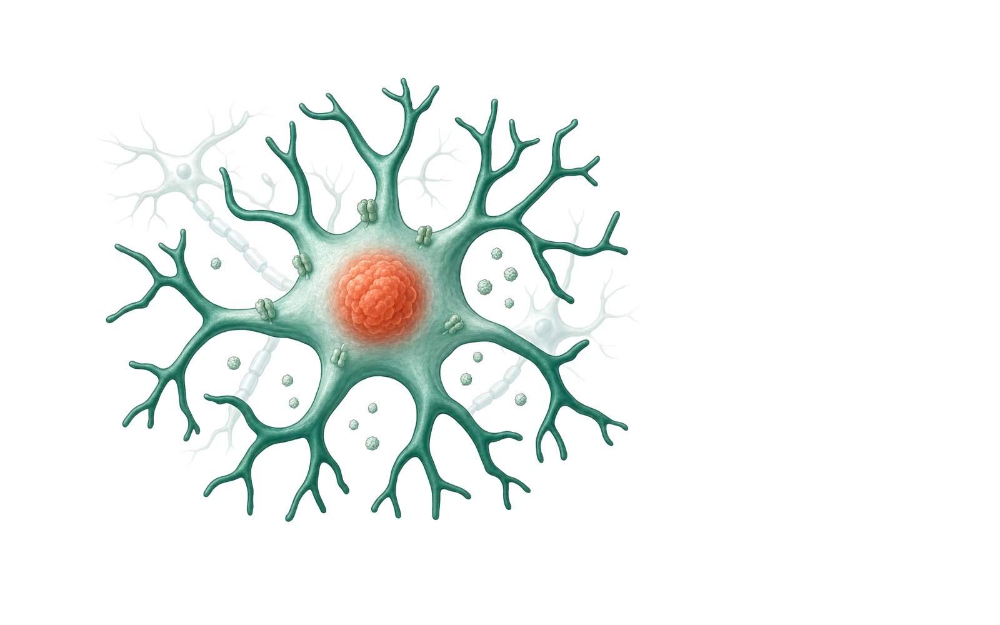
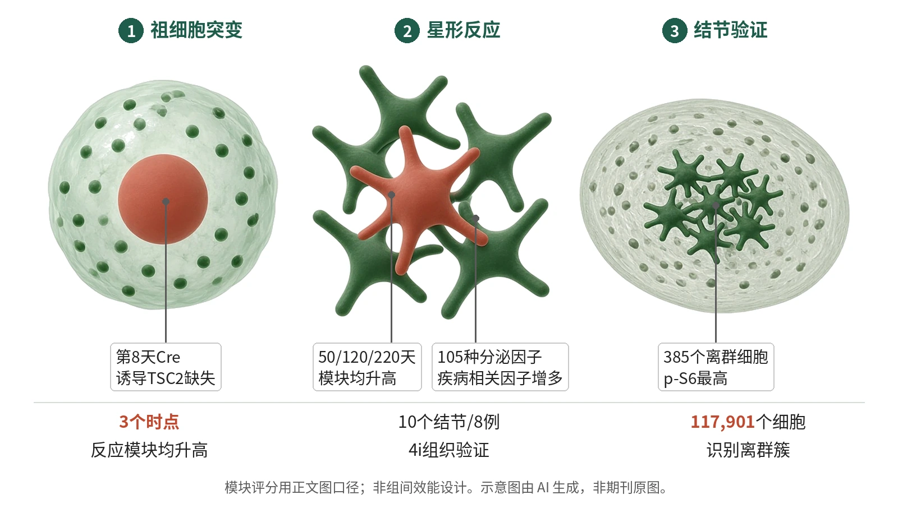

封面示意：放大的反应性星形胶质细胞，内有赤陶红光团。图片由 AI 生成，非原文图片。
在人脑类器官中，Cre诱导TSC2双等位缺失后，GLC在50、120、220天均显著提高反应性星形胶质模块评分。

- 构建马赛克脑类器官
- 追踪突变细胞命运
- 检测反应性蛋白与分泌
- 用患者结节组织验证
图示TSC2双等位缺失的祖细胞在类器官内偏向胶质谱系，并出现反应性星形胶质特征；分泌谱、谷氨酸转运体下降和患者结节高p-S6离群细胞共同支撑这一路径。示意图由 AI 生成，依据原文结果绘制，非期刊原图，不代表分子比例
研究背景与待解问题
TSC以TSC1或TSC2突变、皮质结节和难治性早发癫痫为特征。结节切除组织常见畸形神经元、胶质增生星形胶质细胞、活化小胶质细胞和巨细胞，但长期癫痫本身也能诱发胶质反应，因而难分清胶质改变是病因还是后果。
本文切口是把双等位TSC2缺失放进无癫痫发作的人脑类器官。作者让突变祖细胞和同一类器官内的TSC2 c/−细胞并列发育，再用患者结节组织验证，从而追问mTORC1是否足以把细胞推向反应性星形胶质状态。
研究设计
核心模型是WIBR3 TSC2 c/−;LSL-TdTom人胚胎干细胞类器官。第8天用Cre慢病毒删除部分神经祖细胞的另一个TSC2等位基因，tdTomato阳性即TSC2−/−，tdTomato阴性TSC2 c/−作为同一类器官内对照；单细胞RNA测序分别在50、120、220天进行。
研究不是临床组间效能设计，也不是随机分配动物实验；Methods说明样本量按预实验和文献，实验者未按基因型盲法，图像分析自动化。验证包括TSC2 c/+单击模型、BJ hiPS细胞5批第140天测序、TSC2或TSC1全敲除类器官、纯化星形胶质细胞和患者结节4i染色。
核心结果
主读出成立
贯穿类器官与患者结节，TSC2缺失使祖细胞偏向形成体积增大的促炎反应性星形胶质细胞。主要读出是GLC反应性星形胶质模块评分；TSC2−/− GLC在50、120、220天均显著高于同一类器官内TSC2 c/−细胞。该模块由反应性星形胶质上调基因计算，原文据此把反应性签名归为TSC2丢失的细胞自主后果。
命运偏倚出现
WIBR3模型在第8天Cre后，处理后39,539个细胞映射到胎脑图谱。TSC2−/−细胞较TSC2 c/−更偏向GLC命运，GLC偏倚第50天已可见，并随时间增强。这里的GLC覆盖胶质中间祖细胞、少突胶质祖细胞和分化星形胶质细胞。
对照与复现
同一类器官内对照排除了培养条件差异。TSC2 c/+单击类器官在50和120天仅有温和比例和表达改变，反应性弱于TSC2−/−；BJ雄性hiPS类器官经5批、第8天Cre、第140天测序，显示同样GLC偏倚和反应性星形胶质细胞。
功能蛋白改变
蛋白层面，TSC2−/−类器官中GFAP、S100β、clusterin、CRYAB、Cx43、Kir4.1升高，EAAT1强烈降低；这一EAAT1下降在HepaCAM纯化星形胶质细胞中再次确认。第280天、2条hiPS系培养基测量105种因子，TSC2−/−类器官分泌更多GDF15、CHI3L1、CCL2、SERPINE1、HGF、CSF1、MIF和IGFBP2，其中6种mRNA也上调。
病灶组织对应
第315–355天纯化细胞经7天50 nM rapamycin或100 nM Torin-1处理，仅转向中间状态，p-S6、clusterin、APOE、p62下降但未回到野生型。10个结节、8例患者的4i图像UMAP在117,901个细胞中找到来自9/10结节的385个p-S6最高离群细胞，反应蛋白更高、神经元标志更低。
机制解读
原文实验证明：在同一类器官中，TSC2−/−与TSC2 c/−细胞共享培养环境；双等位TSC2缺失细胞出现更强GLC偏倚和反应模块升高。TSC2 c/+单击模型仅有温和改变、反应性较弱，支持细胞自主性，并支持形成结节样细胞需要双等位缺失。
作者还把转录状态接到蛋白、分泌与病灶：EAAT1降低、疾病相关细胞因子分泌增多，4i显示高p-S6结节细胞富集S100β、vimentin、APOE、clusterin等，并减少HuC/D、MAP2。
作者推测：作者推测，这群高mTORC1星形胶质细胞虽占比很低，仍可能通过谷氨酸清除不足和炎症性分泌物影响周围神经元网络；细胞外基质重塑基因升高也可能参与结节质地改变。这些是由表达和分泌数据提示，未在类器官中直接证明癫痫发作。
局限与不确定
- 类器官外推受限：原文明确模型缺少小胶质细胞、血管细胞和外周免疫细胞，这些细胞都能驱动损伤或疾病中的星形胶质增生；其缺席支持细胞自主性，但也可能改变发育轨迹。
- 患者结节验证是切除样本，来自10个结节、8例难治性癫痫手术患者；高mTORC1激活细胞在结节中不到1%，其广泛影响依赖作者提出的非细胞自主机制，而非直接功能记录。
- 终点多为模块评分、蛋白强度、细胞命运和分泌谱，未在类器官内记录癫痫样网络活动。mTOR抑制只观察7天，且未完全恢复野生型，不能推断长期逆转。
- 方法上，Methods写明实验者未按基因型盲法；人结节高/低p-S6阈值按样本手动设定，可能影响少量离群细胞的边界。
临床/产业意义
如果TSC2双等位缺失先把祖细胞推向反应性星形胶质，而不只是癫痫后的疤痕反应，TSC研究的靶点就需要从神经元扩大到胶质发育、谷氨酸转运和炎症性分泌。类器官提供了可在发作之外追踪病程的体系。
但这仍是人源模型和切除组织证据，不能等同于患者中已证明抑制星形胶质反应会改善癫痫。mTOR抑制只把细胞推向中间状态，提示单纯压低mTORC1可能不足以完全重置病灶细胞状态。